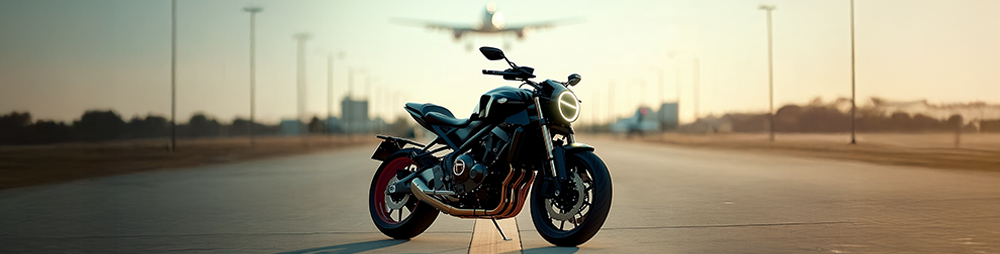
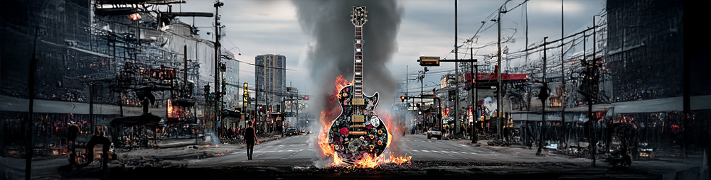
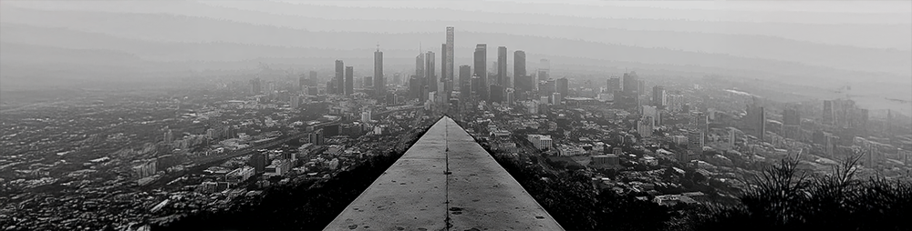
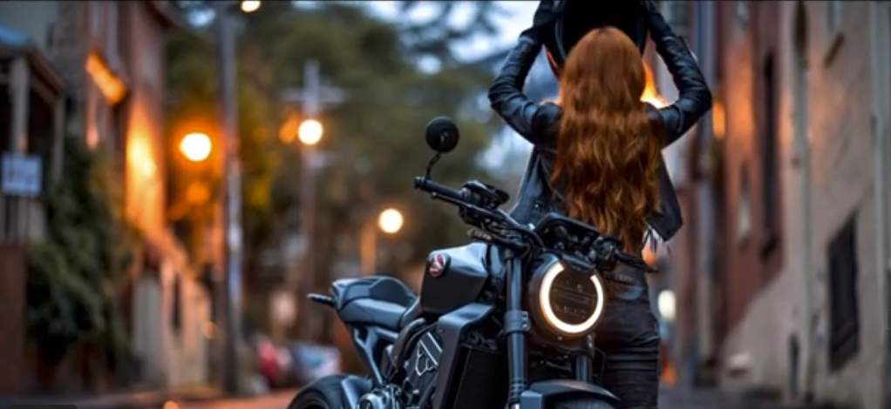

A transmedia project. Two fictional worlds told through 45 original songs, interactive web experiences, character-driven websites, music videos, and short stories.
Each character has their own website. Each song is a chapter. The stories are designed to be explored, not just listened to.

Ethel Ryker is the biological daughter of billionaire property developer Dominic Ryker. Raised in the outback by her grandparents, she is returned to her estranged father's world at 17 after their deaths. She works from the inside, methodically building a forensic case against him.

Isla is Dominic's stepdaughter. Her mother married him. Isla's own biological father, a high court judge, is the source of the trauma her songs are built from. She turns what happened to her into sound, 140 decibels of it, and calls the stage her witness box.

Dominic Ryker is a structural psychopath. He doesn't break systems. He builds them so that other people break them for him. Calm, articulate, certain. He was imprisoned. He escaped. The story continues.
A different century. A different geography. Nalani is an indigenous strategist using terrain, law, and patience against rogue trader Turnbull, while Redfern is caught between two worlds.
Built by one person, an animator using AI as a production tool to build something too large to build alone.

→ The longer story behind the project